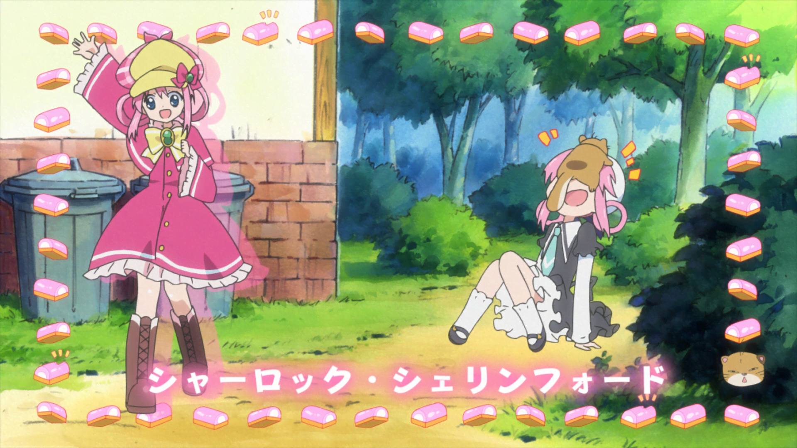

Motion Vector Tools
This page is incomplete!
This list is a stub and still very incomplete! You can help us by expanding it.
How can I help?
- Show different examples of sources and MVTools application
Motion Vector Tools, or MVTools, is a cornerstone of many video processing tools. It works by analyzing the motion between concurrent frames, and return motion vectors that can be leveraged for many purposes.
MVTools Class and Methods
Vapoursynth's MVTools can be imported from the vsdenoise Python library.
This class accepts a number of arguments:
clip
The clip to process.
This is the clip that methods that make use of the analyze results
will operate on, such as degrain.
search_clip
The clip to use for motion vector search.
By default, this will be the same as clip.
If specified, this clip will be used for motion estimation
while keeping the original clip for compensation.
If your source is very noisy or otherwise difficult to analyze,
you can prefilter it and pass the prefiltered clip to search_clip
to improve the quality of the motion estimation.
Common examples include pre-denoising
using a spatial filter such as vsdenoise.DFTTest,
or increasing the levels of the clip using vsdenoise.prefilter_to_full_range.
vectors
Pre-calculated motion vectors to use. If None (default), the class will calculate its own vectors.
pad
How much padding to add to the source frame. Small padding is added to help with motion estimation near frame borders.
pel
Subpixel precision for motion estimation. 1 means pixel precision, 2 means half-pixel, 4 means quarter-pixel. Higher precision can give better results but increases processing time. Default is 1.
planes
Which planes to process. Default is None (all planes).
- Various
*_argsparameters
Arguments that will be passed to their respective MVTools functions. Args are accepted here so MVTools presets can be used.
super_args: Arguments for thesuperfunctionanalyze_args: Arguments for theanalyzefunctionrecalculate_args: Arguments for therecalculatefunctioncompensate_args: Arguments for thecompensatefunctiondegrain_args: Arguments for thedegrainfunction
Reference clip

super
Required method
This method is required for all other methods to work, and must always be called.
Creates a clip suitable for motion vector analysis. This is done by creating a pyramid of frames at different scales, The resulting clip contains the original frames along with additional data used by subsequent MVTools functions. This clip should not be adjusted by the user.
Super clip
analyze
Required method
This method is required for all other methods to work, and must always be called.
Analyzes motion between frames to generate motion vectors.
This function estimates how objects and details move
between consecutive frames in the video
based on block matching frames
using the super clip.
Analyze is performed using a Sum of Absolute Differences (SAD) prediction, which compares blocks between frames by adding up the absolute differences between corresponding pixels.
recalculate
This section is incomplete!
This section is a stub. You can help us by expanding it.
How can I help?
- Explain why recalculate is useful
- Show examples where recalculate proves an easily-visible improvement
Refines existing motion vectors for improved accuracy. This function performs additional analysis to reduce errors and improve the quality of motion estimation.
compensate
Uses motion vectors to create motion-compensated frames. This function shifts pixels according to the calculated motion, which helps align details between frames for temporal processing operations.
Overlap
The compensate method requires you
to have set blksize and overlap
in the analyze method,
as well as recalculate
if that method was called.
Compensate clip
This method returns a tuple containing:
compensated_clip: The interleaved motion-compensated framesframe_offsets: A tuple containing:total_frames: Total number of frames in the compensated clipcenter_offset: Frame offset to the center frame
This method is mostly useful for very simple motion interpolation,
or to be used as a reference for more advanced motion interpolation functions
(such as for example QTempGaussMC).
degrain
Performs temporal denoising using motion compensation. This function combines information from multiple frames while accounting for motion to reduce noise while preserving moving details.
This method is a rather simple denoising method,
and is not recommended to be used alone.
It is mostly useful as a reference for more advanced denoising methods,
such as through BM3D.
Motion Interpolation
This section is incomplete!
This section is a stub. You can help us by expanding it.
How can I help?
- Write about motion interpolation
- Write about use-cases to improve interpolation using MVTools-compensated clip
Denoising
The most common use of MVTools is for temporal denoising. By analyzing motion between frames, MVTools can track how objects and details move over time. This information allows us to distinguish between consistent details that follow expected motion patterns, and random noise that appears independently between frames. This allows us to apply more aggressive noise reduction while reducing the risk of introducing ghosting or smearing.
Static noise
MVTools can only effectively reduce noise that changes between frames. If noise patterns remain static across multiple frames, MVTools will treat them as legitimate image detail since they don't exhibit any motion. This means static noise, including some types of dithering and grain, will be preserved rather than removed. This limitation can be circumvented by combining MVTools with spatial filtering.
Denoising with MVTools is done through two steps:
- Motion Estimation
First, we need to create a motion vector search clip.
This is a clip that contains the original frames,
and the frames that have been shifted by the motion vectors.
This is done by using the super method,
which creates a new clip with the original frames,
and the frames that have been shifted by the motion vectors.
- Denoising
Denoising can be performed using the degrain method.
However, it's not recommended to use this method alone.
Instead, it's recommended to use this as a reference clip
for more complex denoising functions,
such as BM3D.
Using MVTools as a basic clip for BM3D
When degraining using MVTools,
try to lower the thsad value as much as possible.
Higher values will create more smearing and ghosting.